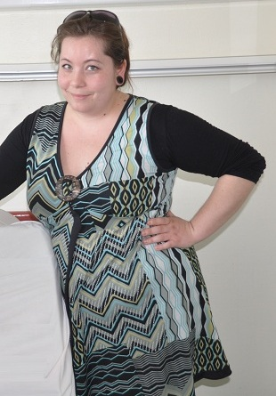

Nous avons partagé de nombreux moments inoubliables avec eux,
Ils ont été présents tout au long de notre histoire,
Ils ont toujours été là pour nous accompagner,
Ils ont été choisis, on compte sur eux le jour J,
Voici ... nos témoins !
Témoins de Madame
Amandine, la cousine chérie :
30 ans, Assistante de direction à Plessis-Robinson (92)
Description succincte
Elle a réussi à percer dans le service des Ressources Humaines et finalement elle se lance dans une nouvelle carrière professionnelle de gestion de projets.
Elle se bat et remue ciel et terre pour arriver à ses fins, c'est son côté Lionne (Son signe astro) !
Quelqu'un de sincère, entière qui ose briser la glace mais qui est pleine de gentillesse.
Ses centres d'intérêts
La fête, les sorties, la piscine avec sa filleule mais aussi les journées tranquilou à se dorer la pillule ☼ !
La rencontre c'était où ? Et quand ?
A ma naissance, elle avait 3 mois :) on a grandi et passé de nombreuses vacances ensemble à Versailles et Juan-les-pins !
On a fait les 400 coups ☺
Une anecdote
C'était en sortant du Pacha Club vers 5h du mat', c'était la Sam de la soirée. On est tous monté un par un dans la voiture : 1, 2, 3, 4, 5, 6, et 7 ! Amandine au volant de la Zafira, et hop c'est parti !
Stoooop ! Comment on allume les phares ??? Impossible de trouver... Et c'est pas nous qui allions l'aider... à part chanter en groupe et remuer la voiture... c'est tout ce qu'on pouvait donner !
Il lui a fallu 10 bonnes minutes pour comprendre où les allemands cachaient le bouton ! Une pure soirée...
Trois mots pour la décrire
Pipelette, fofolle et toujours prête à faire la fête !

Jennifer, la soeurette adorée :
31 ans, En formation comptabilité à Chalon-sur-Saône (71)
Description succincte
Elle est fan des animaux, je crois que si elle avait pu, elle aurait été vétérinaire !
Elle a emmené toute sa tribu pour aller vivre en Bourgogne, le pays du vin, et rejoindre son homme, aaaahh l'amour (du vin et du copain) !
Ses centres d'intérêts
Art manuel, les animaux, la bonne bouffe et papoter
La rencontre c'était où ? Et quand ?
Au collège Pierre de Coubertin à Chevreuse (78), en 4ème. On avait pas encore déménagé, je cherchais une "nounou" après les cours le temps que papa vienne me chercher après son travail.
Sa famille m'a ouvert les bras. Ca a duré plusieurs années... Ma deuxième maison ☺
Une anecdote
Grosse soirée à St Rémy-les-Chevreuse mais pas de voiture... Bon 1h de marche aller et 1h retour, c'est faisable sauf que : soirée à piétiner, danser, ce fut épuisant.
Au retour de la soirée, on avait tellement mal aux pieds qu'on a enlevé nos chaussures sur le trajet...splach, splash, mais pourquoi il y avait autant de limaces sur notre chemin ? Beurk !
Trois mots pour la décrire
Tenace, débrouillarde et surprenante !
Gaëlle, la meilleure amie :
29 ans, Chef de projet informatique à Paris (75)
Description succincte
Fan de décoration, elle aimerait être décoratrice d'intérieur... Mais en attendant de monter sa boîte, il faut mettre des sous de côté et se faire un business plan...
Ses centres d'intérêts
Les boutiques entre nanas, les voyages et les sorties/repas entre potes
La rencontre c'était où ? Et quand ?
Au dernier semestre à l'IUT, on s'est connues au milieu des mecs qui programmaient un e-puck (Petit robot roulant)... Depuis, on est resté soudées pendant nos 3 années d'école d'ingé.
On a tenté le binôme féminin en informatique, on a réussi ! Heureuses et fières d'être informaticiennes !
Une anecdote
C'était en école d'ingé, un midi on a décidé d'aller manger en ville, puis de se faire une virée au Super U. Je me suis garée en parking souterrain, tout était gris, les murs, le sol... tout !
En sortant de ma place de parking à bord de la Twingo de Piwi, j'ai braqué à fond et pas vu le poteau... boum ! J'ai cru que j'avais juste calé... ben non... j'ai "légèrement" enfoncé la voiture à l'avant...
Eclats de rire entre amies avec un Kinder Bueno à la bouche avant de réaliser...
Trois mots pour la décrire
Attentionnée ♡, fidèle (En tant que binôme en tout cas ☺) et pétillante !
Témoins de Monsieur
Arnaud, le fréro :
27 ans, Ingénieur informatique à Paris (75)
Description succincte
Il rêve de créer son entreprise et entreprend beaucoup de projets : top-piercing, vino, etc...
Il cherche a acheter un appartement à Paris avec sa dulcinée Marjorie.
Pour cela il a trouvé une solution pour avoir les bon plans, il travaille chez "Se Loger" !
Ses centres d'intérêts
L'informatique, le théâtre et la mode
La rencontre c'était où ? Et quand ?
Quand il est né à l'hopital, c'est mon petit frère :)
Une anecdote
Quand il était au collège, on passait notre temps à jouer à un jeu "la 4ème prophétie" (T4C pour les intimes)
Mais nos parents coupaient Internet la nuit, alors il fallait redoubler d'ingéniosité pour continuer à jouer !
Il avait acheté un 2ème cable pour rebrancher Internet à l'insu de nos parents ☺
Trois mots pour le décrire
Entrepreneur, aventurier et beau gosse !
Benoit alias Bebel la rondelle :
30 ans, En formation d’Education Physique et Sportive à Orsay (91)
Description succincte
Il me suit depuis le lycée, toutes mes bêtises c'était avec lui !
Bebel est parti à l'aventure en Australie pendant 1 ans et demi avec sa copine qu'il venait de rencontrer.
Il n'a jamais su ce qu'il voulait faire mais bientôt il sera prof de sport et aura beaucoup de vacances ☺
Ses centres d'intérêts
Les voyages, le sport et la littérature !
La rencontre c'était où ? Et quand ?
Au lycée de l'Essouriau en terminale, il était assis au fond de la classe avec son walkman, il a posé la bonne question !
Une anecdote
Au lycée il a inventé le "before", le concept était de boire un coup en comité restreint avant d'aller boire à la vraie soirée.
Trois mots pour le décrire
Aventurier, sportif et cultivé !
Francois, le Chinois :
30 ans, Chef d'entreprise de Bonome en design d'intérieur à Paris (75)
Description succincte
Il a toujours révé de designer, de créer et surtout d'avoir son propre emploi du temps.
Pour ce faire, c'est simple (ou pas), il a créé son entreprise avec 3 associés appellée Bonome.
Ses centres d'intérêts
Design, les potes et la fête
La rencontre c'était où ? Et quand ?
A l'école maternelle des quatres coins, depuis on ne s'est jamais quitté :)
Une anecdote
En rentrant du Double, une boite de nuit à Chartres, j'ai loupé la sortie à Bures-sur-Yvette et je suis allé jusqu'à Paris ...
Etant trop fatigué pour revenir sur Bures, je suis rentré à Versailles et j'ai laissé la voiture à François.
Pas de chance, Elodie avait besoin de la voiture le lendemain ☹
Trois mots pour le décrire
Créatif, bavard et fétard !